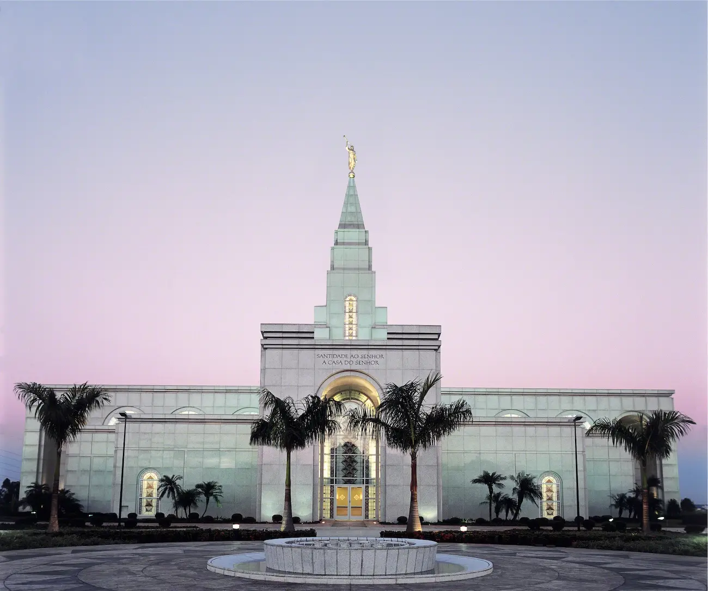

Campinas é a maior cidade do Brasil sem ser capital do estado. Foi a segunda cidade brasileira a ter um Templo de A Igreja de Jesus Cristo dos Santos dos Últimos Dias. É a única cidade sem ser capital que possui um Tribunal Regional do Trabalho - TRT15.
Campinas possui o maior shopping center em área contínua da América Latina, o Shopping Dom Pedro. Possui uma das maiores e melhores universidades do Brasil - A Unicamp.
